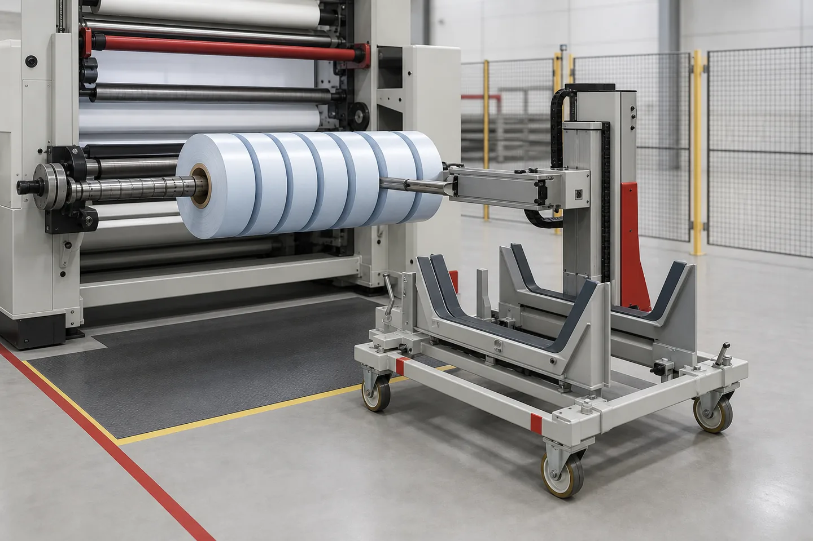

Published July 2, 2026 | By HDPTH Technical Editorial Team

Finished-roll removal is easy to underestimate because it happens after the visible converting work is complete. Yet a machine that slits and winds well can still lose output if operators wait for a hoist, struggle to release rolls from a shaft, or move products through an awkward aisle. Poor transfer can also damage roll edges, crush cores or mix finished rolls that should remain traceable.
The right question is not simply, "Does the machine have automatic unloading?" Ask how every contracted roll recipe moves from the winding position to a defined hand-off point. That point may be a cart, cradle, pallet, wrapping station, conveyor or downstream line. Until the destination and safe state are clear, "automatic" describes a feature rather than a complete production solution.
Slitter rewinder roll unloading system options
| Method | What It Does | Main Buyer Check |
|---|---|---|
| Manual lift-out or shaft removal | The operator removes a light roll, package or removable shaft using the agreed aid. | Roll mass, reach, support and lifting method are suitable for every recipe. |
| Powered roll pusher | A linear device pushes one or more rolls axially from a cantilevered or supported mandrel. | Rolls remain supported and do not collide, tip or damage edges during release. |
| Unload stand or trolley | A receiving mandrel, cradle or cart accepts rolls at the rewind position. | Height, alignment, load rating, wheel or floor condition and downstream route match the plant. |
| Shaft extraction or transfer | The shaft is withdrawn, transferred or manipulated relative to the finished rolls and new cores. | Shaft support, core loading, roll retention and cycle recovery are defined. |
| Integrated automatic handling | Pushers, stands, conveyors, turners or robots connect the rewinder to the next process. | Interfaces, accumulation, identification and fault states are engineered as one system. |
These categories overlap. A powered pusher normally needs a receiving device; a shaft extraction system may feed a core loader; an unloading trolley may be manual to move but automatic to dock. Request a sequence drawing or short control narrative showing each motion, confirmation sensor and operator action.
When unloading automation is commercially justified
Start with measured cycle data. Record normal run length, deceleration, tail handling, roll release, removal, core loading, rethreading and restart. If unloading occupies a small fraction of a long production run, a well-designed semi-automatic method may be sufficient. If short orders create many roll changes per shift, the same delay can become a dominant capacity loss.
Roll properties matter more than a generic automation level. A wide, heavy roll may be difficult to handle even when changes are infrequent. A bank of many narrow rolls may be individually light but unstable when pushed together. Soft nonwoven rolls, smooth film, coated paper and loosely wound material can need different support and surface protection.
Also examine labor availability and downstream timing. Automation can reduce repeated intervention, but it does not eliminate the need to stage cores, remove completed rolls, manage labels or clear a full trolley. A transfer system only improves throughput when the next process can receive its output.
Specify the finished roll and shaft as one handling unit
Roll dimensions, mass and arrangement
Give the supplier typical and maximum roll width, outside diameter and mass. Include the number of rolls on each shaft and show mixed-width or asymmetric patterns. A pusher moving six equal rolls faces a different load from one moving a narrow light roll beside a wide heavy roll.
Do not calculate mass from diameter alone. Material density, thickness, winding tightness and core affect the result. If actual production rolls exist, weigh representative packages. HDPTH's guide to core size and finished roll diameter explains the information suppliers need before sizing the rewind and handling arrangement.
Shaft support and core release
Clarify whether the rewind uses cantilevered, lift-out, double-supported, locked-core or differential shafts. A cantilever arrangement can allow axial pushing from one side, while a removable shaft changes the transfer sequence. Differential elements, core stops, spacers and clamping devices must release without damaging the core or creating uncontrolled roll movement.
Parkinson Technologies describes linear roll pushers and several levels of unload stands for finished packages on cantilevered rewind mandrels. That illustrates why the pusher and receiver should be considered together. The exact method remains project-specific.
Product protection and traceability
State which surfaces may contact the roll, whether edges can carry load, and whether rolls may touch each other during transfer. Films can telescope or mark, paper edges can dent, and soft nonwovens can deform when a cradle concentrates pressure. Specify wrapping, interleaving or edge-protection steps if they occur before storage.
If finished rolls require individual labels, inspection status or lane identification, decide where that information is applied and verified. A fast unloading cycle that mixes lane order can create a quality problem downstream.
Need the unloading cycle reviewed with your roll recipes?
Send HDPTH your finished-roll dimensions, mass, shaft arrangement, changeover frequency and downstream layout for a project-specific machinery discussion.
Request a Handling ReviewControls, guarding and operator access
Powered unloading introduces motion at the point where operators expect to approach the machine. Define the safe operating mode: when the shaft may rotate, when supports can move, how a trolley is confirmed in position, and what prevents a pusher from cycling into an absent or misaligned receiver. Interlocks should be part of the FAT sequence, not treated as a drawing note.
OSHA's machine-guarding guidance identifies hazards from ingoing nip points, rotating parts and other machine motions, and notes that the appropriate safeguarding method depends partly on material handling and production requirements. For a US installation, review the applicable OSHA requirements; European and other destinations must apply their own legal and risk-assessment framework. This article is specification guidance, not a safety certification.
Emergency stops and guard openings are not enough by themselves. Buyers should ask how the system behaves after interrupted motion, air-pressure loss, power loss, a roll that does not release, or a trolley that moves out of position. Recovery should not require personnel to enter a hazardous area while energy remains uncontrolled.
RFQ checklist for roll unloading
- Material family, thickness or basis weight, surface sensitivity and roll-build characteristics.
- Finished-roll width, outside diameter, typical mass and maximum mass.
- Core inside diameter, core material, wall thickness and allowable core loading.
- Number and arrangement of rolls on each rewind shaft, including mixed-width recipes.
- Rewind shaft type, support method, length and any differential or locking elements.
- Roll changes per shift, typical run length and target restart time.
- Operator count and actions allowed during the unload sequence.
- Required hand-off point: floor cradle, trolley, pallet, conveyor, wrapper or other equipment.
- Available aisle width, floor condition, turning radius, doorways and lifting equipment.
- Roll orientation required by the next process and whether turning or tilting is needed.
- Edge, surface, core and contamination protection requirements.
- Labeling, weighing, barcode or roll-order traceability steps.
- Destination-country electrical, guarding and safety requirements.
- Representative materials and cores available for factory trials.
Ask each supplier to identify what is standard, optional and excluded. The HDPTH high-speed slitting machines page presents machinery as project-based and asks buyers to confirm material, width, speed and roll requirements. The same application data should govern the unloading scope rather than a generic accessory list.
HDPTH's certificates and patents page lists an Automated Shaft-Pulling System for Slitting Machine. This verifies that the technology appears in HDPTH's published patent portfolio; it does not mean that automatic shaft pulling is standard on every machine. Require the quotation and approved drawings to state the exact delivered configuration.
Factory acceptance testing for the complete unload cycle
FAT should reproduce the most demanding contracted cases, not only an empty-shaft demonstration. Run a recipe with the largest approved roll mass or diameter, a narrow-roll pattern that tests stability, and a mixed-width pattern if it is part of production. Use the intended cores, spacers and shaft pressure.
Observe normal stopping and confirm that roll tails, shaft supports and clamps reach the agreed state before transfer begins. Check pusher travel, trolley alignment, roll spacing and final stability. Inspect cores, roll edges and outer wraps after removal. If a stand rotates or tilts, verify the load remains controlled through the full motion.
Measure the complete changeover from production stop to stable restart. Separate automatic cycle time from operator tasks and trolley removal so management receives a realistic figure. Repeat the cycle; one successful run does not establish repeatability.
Test abnormal conditions deliberately under the agreed procedure: receiver absent, guard open, sensor not confirmed, emergency stop during motion and restart after power or air interruption. Confirm alarms identify the blocked step and that recovery instructions are documented. Connect these checks with the broader slitter rewinder FAT checklist.
Shipment inspection and installation preparation
Before packing, reconcile shafts, pushers, receiving mandrels, trolleys, hoses, cables, sensors, guards and change parts with the approved layout and packing list. Photograph removed assemblies in their installed position, protect precision surfaces and mark lifting points. Back up control parameters and FAT recipes.
At the destination, prepare the material route as carefully as the machine foundation. Confirm floor level and capacity, trolley parking, aisle clearance, charger or utility locations if applicable, and space for cores and completed rolls. Make sure the receiving equipment available during commissioning matches what was used in the factory test.
Installation acceptance should repeat at least one handling cycle with production material. Train operators on normal sequence, faults, manual recovery, isolation and inspection points. A useful handover leaves the plant able to explain where the roll is supported and what prevents uncontrolled movement at every stage.
Common purchasing mistakes
- Buying "automatic unloading" without defining the final hand-off point.
- Giving maximum diameter but omitting roll mass and mixed-width patterns.
- Specifying a pusher without a compatible receiving stand or trolley.
- Ignoring core release, differential elements and shaft support during transfer.
- Assuming the downstream area can absorb rolls as quickly as the machine ejects them.
- Testing empty shafts instead of representative finished packages.
- Leaving fault recovery, guarding and interlocks until commissioning.
- Comparing automation price without measuring current changeover loss.
Buyer FAQs
When does a slitter rewinder need an automatic roll unloading system?
Automation becomes worth evaluating when finished rolls are too heavy or awkward for the planned manual method, roll changes consume significant productive time, the same handling cycle repeats frequently, or downstream equipment needs a controlled transfer. The decision should use actual roll mass, dimensions, changeover frequency and plant flow.
What is the difference between a roll pusher and a shaft extraction system?
A roll pusher moves finished rolls axially off a supported rewind shaft or mandrel. A shaft extraction system removes or transfers the shaft relative to the rolls and may be combined with a core loader or trolley. The correct arrangement depends on shaft support, roll layout and the next handling step.
Can one unloading system handle every finished-roll recipe?
Not automatically. Mixed widths, unequal roll masses, very narrow rolls, large diameters and sensitive surfaces can change how rolls are supported and transferred. Buyers should submit representative recipes and require the supplier to state limits and change parts.
What information belongs in an RFQ for roll unloading?
Include finished-roll width, diameter, maximum and typical mass, core size, number and arrangement of rolls per shaft, shaft type, changeovers per shift, operator count, floor layout, downstream destination and any surface-protection or traceability requirements.
How should roll unloading be tested during FAT?
Run representative narrow, heavy and mixed-width recipes, then verify stopping, shaft support, roll release, pusher or trolley motion, roll stability, guarding, interlocks, reset behavior and transfer to the agreed destination. Record cycle time and inspect rolls and cores for damage.
Sources
- Parkinson Technologies: Center Slitter Rewinder roll pushers and unload stands
- Temac: Automatic finished-roll ejection and unloading example
- Temac: Slitter rewinder operation and unloading methods
- OSHA: Machine guarding general requirements
Define the complete finished-roll hand-off
Send your roll recipes, shaft arrangement, changeover data, floor plan and downstream handling method. HDPTH can review the information for a project-specific slitting and rewinding proposal.
Send Your Machinery RFQ